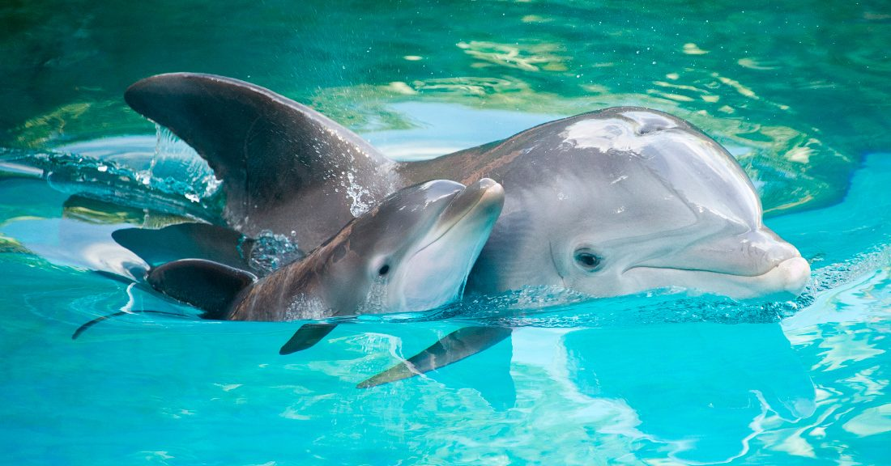

Todos los cetáceos dentados, como el delfín, el cachalote o la ballena, poseen un sistema que les permite la ecolocalización o ecolocación. En el océano, incluso, es mucho más útil este sentido que la misma visión, dada la ausencia de luz en lo profundo de los mares. Para conseguir presas y evitar ser parte del menú de otros predadores, los cetáceos dentados desarrollaron este sentido. En el caso de los delfines, estos producen un ruido que se proyecta a través de las agua y al rebotar en un cuerpo sólido, proyecta una imagen mental en el cerebro del delfín. Para conseguir presas y evitar ser parte del men&uacyute; de otros predadores, los cetáceos dentados desarrollaron este sentido. En el caso de los delfines, estos producen un ruido que se proyecta a través de las agua y al rebotar en un cuerpo sólido, proyecta una imagen mental en el cerebro del delfín. Los delfines nariz de botella, por ejemplo, son capaces de producir estas señales sonoras de entre 40 y 70 microsegundos, a un volumen cercano a los 220 decibeles. Cientos de veces por segundos estas criaturas producen señales como clics, para rastrear la zona en la que se encuentran navegando. Esta frecuencia es inaudible para el oído humano, lo que la hace ultrasónica y la pone al nivel de nuestros radares, que se usan comúnmente en la navegación marítima y aérea. Esta capacidad de elocalización le da grandes posibilidades al delfín, frente a predadores marinos como el tiburón; además de su jerarquía social, que lo hace un animal con ventaja frente a otros.
| REINO | Animalia |
| FILO | Chordata |
| CLASE | Mammalia |
| ORDEN | Cetacea |
| SUBORDEN | Odontoceti |
| FAMILIA | Delphinidae |